| useHorizontalErrorBar |
Boolean |
Lets you set whether to show half or full horizontal error bars. By default this attribute is set to 0. |
useHorizontalErrorBar='1' |
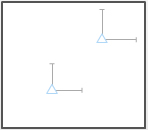 |
| useVerticalErrorBar |
Boolean |
Lets you set whether to show half or full vertical error bars. By default this attribute is set to 1. |
useVerticalErrorBar='1' |
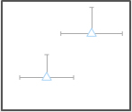 |
| halfHorizontalErrorBar |
Boolean |
If you have opted to show horizontal error bars, this attribute lets you set whether to show half or full horizontal error bars. By default this attribute is set to 1. |
halfHorizontalErrorBar='0' |
|
| halfVerticalErrorBar |
Boolean |
Lets you set whether to show half or full vertical error bars. By default this attribute is set to 1. |
halfVerticalErrorBar='0' |
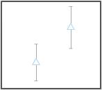 |
| horizontalErrorBarColor |
Hex Code |
Lets you set a color for the horizontal error bars. |
horizontalErrorBarColor='ff0000' |
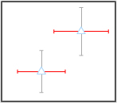 |
| verticalErrorBarColor |
Hex Code |
Lets you set a color for the vertical error bars. |
verticalErrorBarColor='ff0000' |
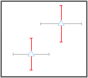 |
| errorBarColor |
Hex Code |
Lets you set the color of both horizontal and vertical error bars. |
errorBarColor='ff0000' |
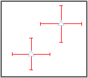 |
| horizontalErrorBarAlpha |
Numeric Value (0-100) |
Lets you set the alpha of the horizontal error bars. |
horizontalErrorBarAlpha='40' |
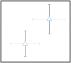 |
| verticalErrorBarAlpha |
Numeric Value (0-100) |
Lets you set the alpha of the vertical error bars. |
verticalErrorBarAlpha='40' |
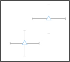 |
| errorBarAlpha |
Numeric Value (0-100) |
Lets you set the alpha of both horizontal and vertical error bars. |
errorBarAlpha='40' |
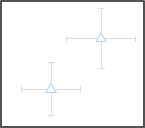 |
| horizontalErrorBarThickness |
Numeric value |
Lets you set the thickness of the horizontal error bars. |
horizontalErrorBarThickness='3' |
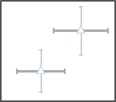 |
| verticalErrorBarThickness |
Numeric value |
Lets you set the thickness of the vertical error bars. |
verticalErrorBarThickness='3' |
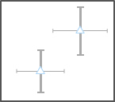 |
| errorBarThickness |
Numeric value |
Lets you set the thickness of both horizontal and vertical error bars. |
errorBarThickness='3' |
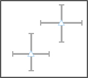 |
| horizontalErrorBarWidth |
Numeric Value |
Lets you configure the width of the horizontal error bars in pixels. |
horizontalErrorBarWidth='20' |
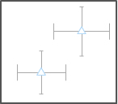 |
| verticalErrorBarWidth |
Numeric Value |
Lets you configure the width of the vertical error bars in pixels. |
verticalErrorBarWidth='20' |
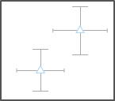 |
| errorBarWidth |
Numeric Value |
Lets you configure the width of both horizontal and vertical error bars in pixels. |
errorBarWidth='20' |
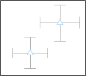 |